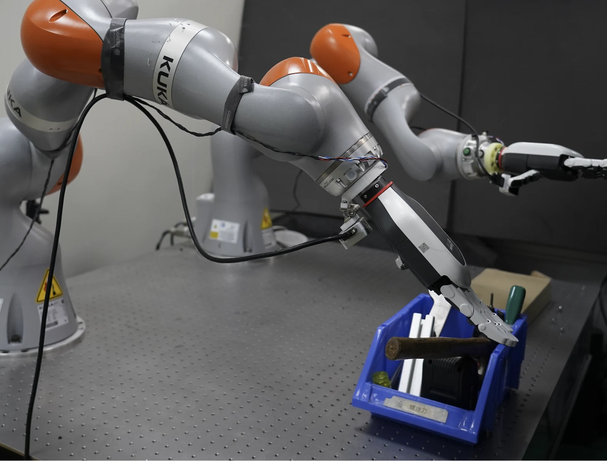
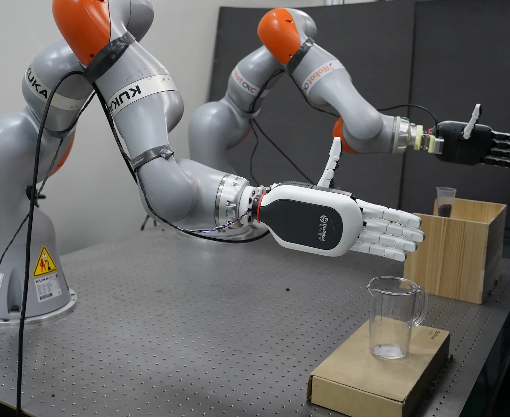
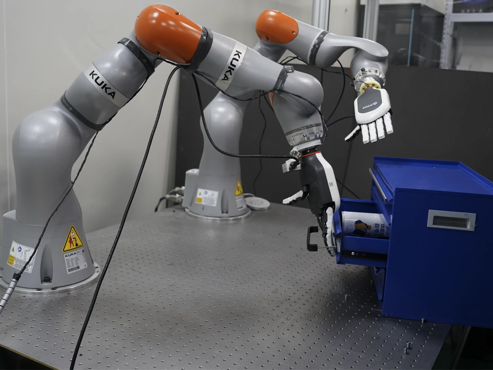

Scaling Dexterous Manipulation
via Action Representation
Pretraining.
Learn the action space first. Then learn to act.
Pretrain on human manipulation. Generate dexterous robot actions with a compact policy.

01 / Hammer handover↗
02 / Pouring coffee beans↗
03 / Cabinet retrieval↗A better action space.
A different way to scale.
Vision and language benefit from large-scale pretraining. Complex robot actions still depend on scarce demonstrations to learn both how actions are represented and how to generate them.
ARPG separates these two problems. It learns a reusable action representation from human manipulation data, then trains a compact policy to generate actions in that fixed space.
learned together
Scale the representation independently of robot demonstration data and generative model size.
Change the space.
Change the learning problem.
The same actions can be easier to model in a learned representation. Watch the data change coordinates before the generator learns their structure.
Direct action generation
Model the original action coordinates
Generation in a learned representation
Action samples → pretrained encoder → representations
Conceptual animation, not a projection of measured embeddings or a training simulation. A useful representation need not be lower-dimensional or flat. Its benefit depends on the pretraining objective, motion information retained, and decoder quality; the ablation does not establish manifold flattening as the cause.
From human motion
to robot action.
First build an action space that preserves motion and is easy to model. Then learn to generate in it. The three steps below separate representation learning, robot adaptation, and policy training.
One interface. Different hands.
Human and robot trajectories share a 324-dimensional bimanual format: 162 values per hand describing joints, palm orientation, wrist position, and hand keypoints. A validity mask handles missing dimensions. The robot-specific decoder turns the learned representation into executable controls.

What actually runs on the robot?
- Visual observations
+ robot state - 130M DiT
generates action representations - Frozen decoder
outputs an action chunk
Generation starts from Gaussian noise. Neither the action encoder nor the V-JEPA video reference runs at inference. The complete active policy has 0.46B parameters; 130M refers only to its generative backbone.
Stronger coordination.
Smaller deployment footprint.
11 dexterous manipulation tasks: six single-arm and five bimanual. Success rates are macro-averaged using the benchmark’s task definitions and success criteria.
Bimanual success rises from 10.1% to 44.7% under multi-task training. This is the clearest gain in the benchmark: coordinating two hands across multiple tasks.
π0.5: 9.05 GB
π0.5: 84.9 ms
π0.5: 3.35B · Backbone: 130M
Explore the full comparison · Table 1
| Setting | Method | Params (B) | VRAM (GB) | Latency (ms) | Single-arm (%) | Bimanual (%) | Overall (%) |
|---|
Source: Table 1. Baseline benchmark results are reported by DexJoCo. Inference costs follow the measurement configuration in the paper; they are not hardware-independent guarantees.
Dexterity in the real world.
Three long-horizon tasks, each with three ordered stages. ARPG and π0.5 use the same robot demonstrations, initial-state distributions, and success criteria. Each method is evaluated for 30 trials per task.
Figure 3 · Full-task success, 30 trials per method per task. Videos show edited task demonstrations; success rates summarize all evaluation trials.
ARPG improves success on all three evaluated tasks. The largest gain is +33.3 percentage points on pouring coffee beans.
Scale the behaviors.
Not only the hours.
Can a better pretrained action space improve manipulation without more robot demonstrations or a larger generative backbone? We vary three pretraining dimensions separately.
Figure 4 · Downstream DexJoCo overall success. Data settings are nested subsets. Lines connect evaluated configurations, not a fitted scaling law. Other configurations are held fixed within each comparison.
Data volume and behavioral coverage both change from 10 to 500 hours, so their causal contributions cannot be isolated. The 3,000-hour expansion concentrates on already represented task categories. Larger encoders and longer pretraining also yield no consistent additional gains.
The action space matters.
With robot demonstrations, observations, and the downstream generator fixed, visual alignment produces the strongest representation for generation among the evaluated objectives.
Action representation
Table 2(a) · DexJoCo overall success (%)
Multi-layer aggregation
| Final encoder layers | Success (%) |
|---|---|
| 1 | 52.5 |
| 2 | 57.8 |
| 3 | 51.6 |
Auxiliary generation objectives
| Objective | Success (%) |
|---|---|
| Without REPA alignment | 54.85 |
| Without action decoding loss | 56.0 |
| Full objective | 57.8 |
An independent axis
for robot learning.
Action representation pretraining offers a reusable component for complex dexterous control, with improvements demonstrated in simulation and on three physical manipulation tasks.
The current study focuses on dexterous hands. Transfer to other embodiments, semantic understanding, and open-world generalization remain to be evaluated systematically. Scaling results apply to the tested data pool and model configurations.
What makes an action representation useful for generation—not just better aligned?
Explore the research.
Read the manuscript for complete methods, implementation details, evaluation protocols, and additional analyses.
Read the abstract
Based on the arxiv-paper preprint in this project. The PDF includes author information; an arXiv identifier and code link have not yet been supplied.